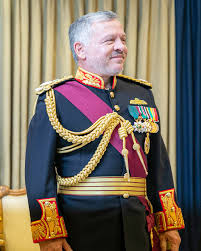

Home
Amman
Al Aqabah
Maan
Al Tafelah
Al Karak
Zarqa
Al Salt
Al Mafraq
Irbid
Ajloun
Jarash
Balqa
Madaba
Introduction to the Kings of Jordan
Introduction to the King of jordan
King Abdullah I - founder of the Hashemite Kingdom of Jordan After his success in defending Arab East Jerusalem and the West Bank during the Arab-Israeli War in 1948, King Abdullah began regularly attending Al-Aqsa Mosque in Jerusalem to perform Friday prayers. On July 20, 1951, he was martyred while performing Friday prayers there with his grandson Al-Hussein
King Talal bin Abdullah, second king of Jordan
Al-Hussein bin Talal completed his eighteen lunar years on May 2, 1953. He assumed his constitutional powers, inaugurating a new phase in the modern history of Jordan, which lasted forty-seven years (1952-1999) under the slogan that embodied his philosophy and approach to governance.

His Majesty King Abdullah II bin Al Hussein, may God protect and protect him His Majesty assumed his constitutional powers as King of the Hashemite Kingdom of Jordan on February 7, 1999, the day of the death of his father, His Majesty King Hussein bin Talal, may God rest his soul.